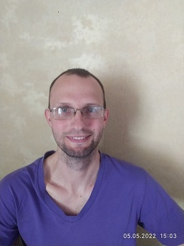

Front-End Developer
Melnikov Vlad

Work Experience
Storekeeper, production manager assistant
Kharkov Plant of Grain Processing Equipment (KhZZO)
from 10.2021 - present time
- Control of the movement of workpieces from the laser cutter to the bending machine, and from the bending machine to the
fitters, for the assembly of equipment.
- Control of product residues
- Assembly of products and components according to orders
- Identification of inaccuracies and inconsistencies in drawings
Warehouse manager, storekeeper
TOV "FalkonTrak"
06.2019 - 09.2021
- Reception/issuance of spare parts
- Internal movements, inventory
- Maintaining related documents
- Primary accounting
- Work in 1C (incoming, outgoing, moving, returning, picking)
- Return control (from customer to supplier)